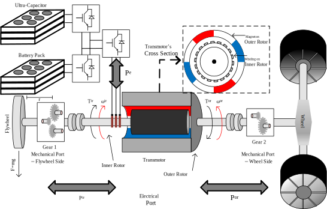

Project 1: Transmotor-Flywheel-Ultracapacitor Powertrain for Vehicle Applications
This study proposed a powertrain for BEVs that is capable of improving regenerative braking significantly by utilizing a lightweight flywheel and a small ultracapacitor pack as power sources. In order to connect the flywheel and ultracapacitor to the drive shaft effectively and more efficiently, a two-shaft electric motor called the transmotor is utilized. Further, the proposed powertrain, transmotor-flywheel assisted by ultracapacitor, enables us to reduce the power rating of the battery pack to the extent that it only be used for low power demand loads such as cruising.
Read MoreProject 2: High Performance/Offroad Transmotor-Based Powertrain
In the proposed powertrain, the maximum torque can be available at a larger speed range. This feature leads to three notable improvements.First, higher gradability is achievable at any vehicle speed that enables maintaining the desired speed at a higher road grade. Furthermore, acceleration and deceleration (regenerative braking) are significantly improved, in comparison to the conventional powertrain, without increasing the powertrain electrical rating. the efficiency can be improved due to the effective kinetic energy recovery at higher speeds.
Read MoreProject 3: AWD/4WD Transmotor-Flywheel-Based Powertrain
This study introduces a novel 4WD electric powertrain that significantly increases the overall powertrain performance and battery lifespan. The proposed powertrain benefits from a new compact and highly efficient flywheel-based kinetic energy recovery system (KERS) that enables us to overcome most of the shortcomings of the conventional Battery-based KERS.
Read MoreProject 4: Transmotor-Based Kinetic Energy Recovery System (KERS)
The Active Electromagnetic Slip Coupling kinetic energy recovery system, introduced in this paper, is a low cost, yet highly efficient method of energy transfer between a vehicle and a lightweight flywheel. The transferred torque, as well as the coupling status, is determined by controlling its windings currents. The proposed system can work at any slip safely, including negative and positive values, between the primary and the secondary shafts as the slip power is converted into electrical power, and thus can be recovered. The proposed kinetic energy recovery system (KERS) is less costly and less complicated than flywheel batteries as it needs only one electric machine and one power electronic converter. Moreover ...
Read MoreProject 5: Brushless Doubly Fed Induction Machine (BDFIM) for Wind Turbin Applications
The Cascaded (Brushless) Doubly-Fed Induction Machine (CDFIM) is a promising substitute for the commonly used Doubly-Fed Induction Machines (DFIM) for wind power application. The CDFIM offers reliable performance and low maintenance due to the absence of slip rings and graphite brushes. In this projects, a detailed analytical model for the CDFIM is proposed in order to clearly show the controllable input (i.e., current from inverter side) and output (i.e., total output torque) relationship.
Read More